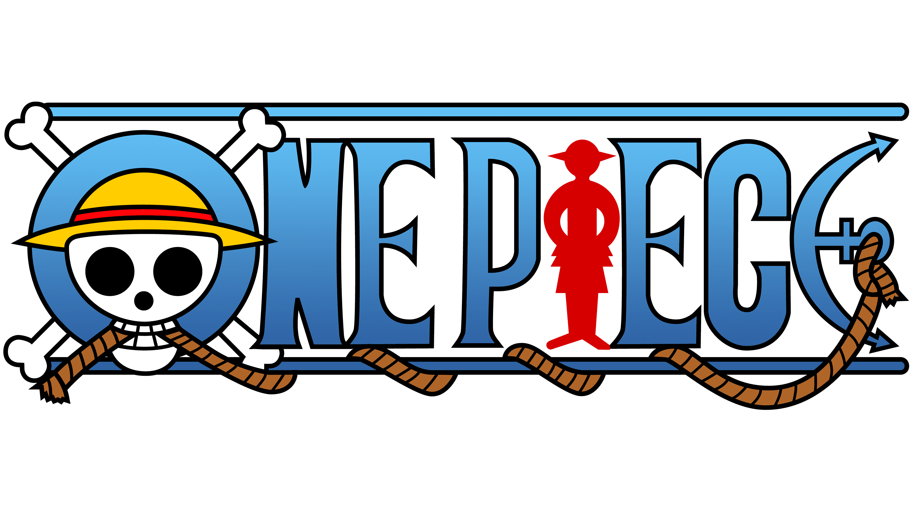
The Great Pirate Era & The Quest for One Piece
Welcome to the One Piece reference wiki. This web application documents the journey of Monkey D. Luffy and the Straw Hat Pirates as they sail across the Grand Line in search of the legendary treasure left behind by Gol D. Roger.
“My treasure? If you want it, you can have it! Search for it! I left everything in that place!”
— Gol D. Roger, King of the Pirates (Execution at Loguetown)Series Quick Facts
Eiichiro Oda • Weekly Shōnen JumpThe Straw Hat Pirates (麦わらの一味)
10 Active MembersThe central pirate crew of the series. Click on any member below to open their individual profile page:
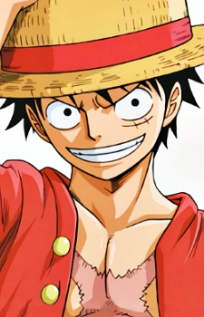
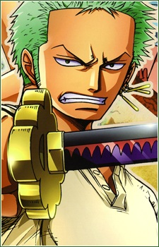
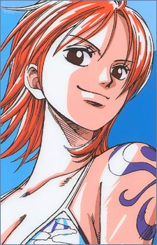
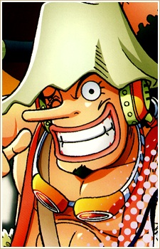
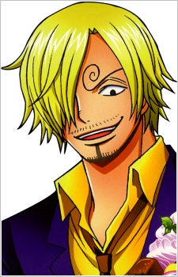
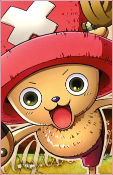
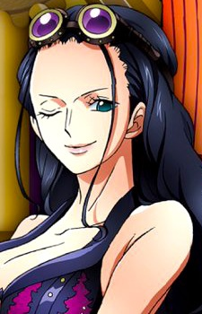
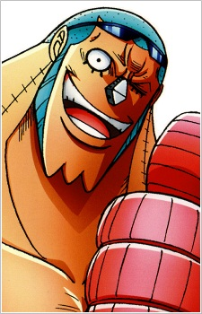
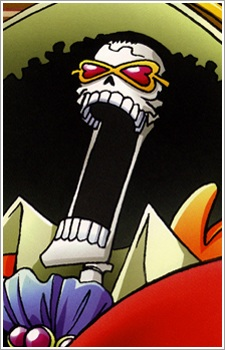
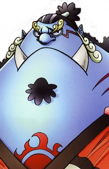
Straw Hat Ships (海賊船)
2 Iconic VesselsThe legendary vessels that carried the Straw Hat Pirates across treacherous seas. Click on either ship to open its individual profile page:
Bare Bones Synopsis: The 4 Acts
Chronological SummaryAct I: The Spark of Ambition & The Straw Hat Vow
Romance Dawn • East BlueThe story begins in Foosha Village where seven-year-old Monkey D. Luffy accidentally eats the supernatural Gum-Gum Fruit (later revealed as the mythical Hito Hito no Mi, Model: Nika), turning his body into rubber at the cost of being cursed to drown in water. When pirate captain "Red-Haired" Shanks sacrifices his left arm to protect Luffy from a Sea King and entrusts him with his cherished straw hat, Luffy vows to assemble a crew, venture onto the seas, and become the King of the Pirates.
Act II: Gathering the Nakama Across the Four Seas
East Blue to Grand LineSetting sail alone in a small wooden dinghy, Luffy recruits comrades not as subordinates, but as partners bound by individual life dreams: swordsman Roronoa Zoro, navigator Nami, sniper Usopp, and chef Vinsmoke Sanji. Entering the unpredictable Grand Line through Reverse Mountain, the crew expands to include doctor Tony Tony Chopper, archaeologist Nico Robin, shipwright Franky, musician Brook, and helmsman Jinbe—forging an unshakeable bond as nakama.
Act III: Colliding with the World Government & The Three Powers
Grand Line to New WorldWhat begins as an adventure evolves into an existential collision with global tyranny. The Straw Hats clash with the Three Great Powers: the Marine armada, the Seven Warlords of the Sea (Shichibukai), and the Four Emperors (Yonko). After declaring war on the World Government at Enies Lobby to rescue Robin and enduring the tragic Summit War of Marineford (where Luffy loses his sworn brother Ace), the crew completes a two-year training hiatus before reuniting to liberate oppressed nations throughout the perilous New World.
Act IV: The Void Century, Sun God Nika & Laugh Tale
Wano Country • Final SagaDuring the climactic raid on Onigashima in Wano Country, Luffy awakens his devil fruit as the legendary "Warrior of Liberation: Sun God Nika," defeating Emperor Kaido and ascending to the rank of Emperor of the Sea. To reach the final island, Laugh Tale, the Straw Hats must decipher four ruby-red Road Poneglyphs. These ancient stelae conceal the truth of the erased Void Century, the Ancient Weapons (Pluton, Poseidon, Uranus), the enigmatic "Will of D.", and the treasure left 800 years ago by Joy Boy: the One Piece.
Canon Systems & World Mysteries
Core Lore MechanicsDevil Fruits (悪魔の実)
Supernatural fruits granting distinct superhuman abilities, categorized into Paramecia (bodily mutations), Zoan (creature transformations), and Logia (elemental manipulation).
The Three Forms of Haki (覇気)
Dormant spiritual willpower: Kenbunshoku (Observation), Busoshoku (Armament hardening), and Haoshoku (Conqueror's disposition to overpower wills).
Poneglyphs & Void Century
Indestructible stone monoliths written in ancient script by the Kozuki clan, preserving the true history of the 100-year historical blackout 800 years ago.
The Will of D. (Dの意志)
An enigmatic lineage carried by chosen disruptors of history, famously feared by the Celestial Dragons as the "Natural Enemies of the Gods."